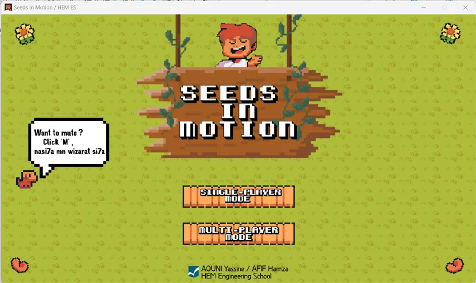
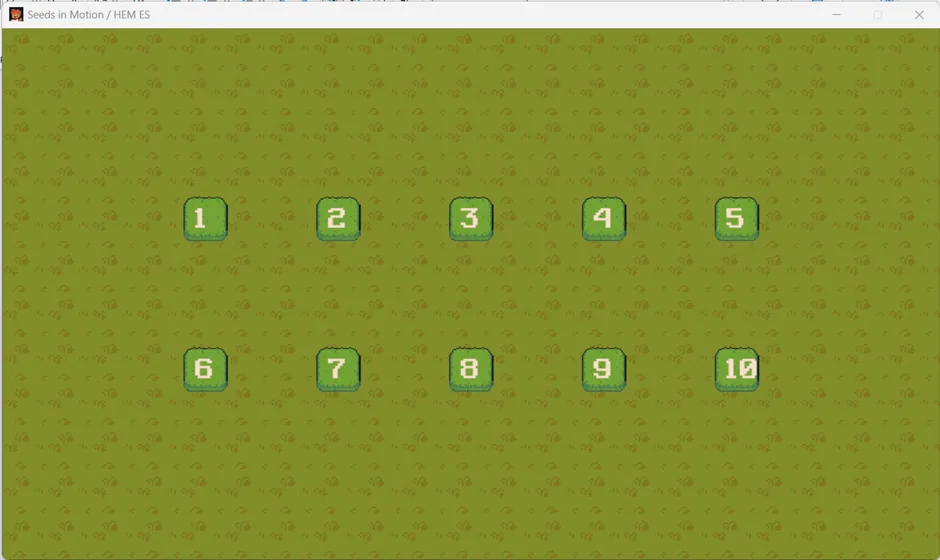
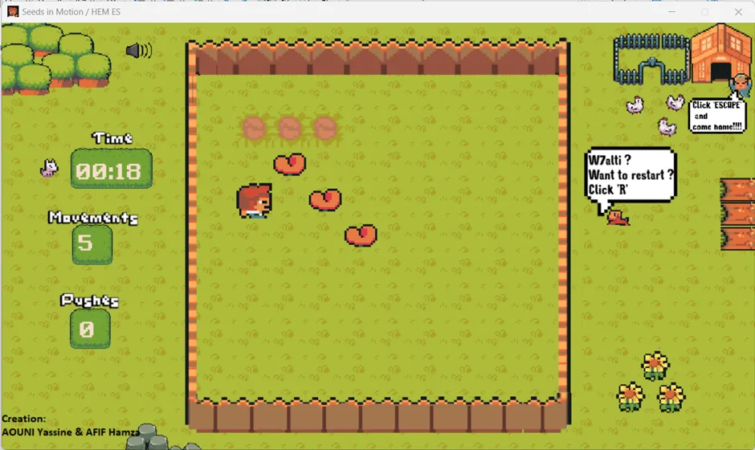
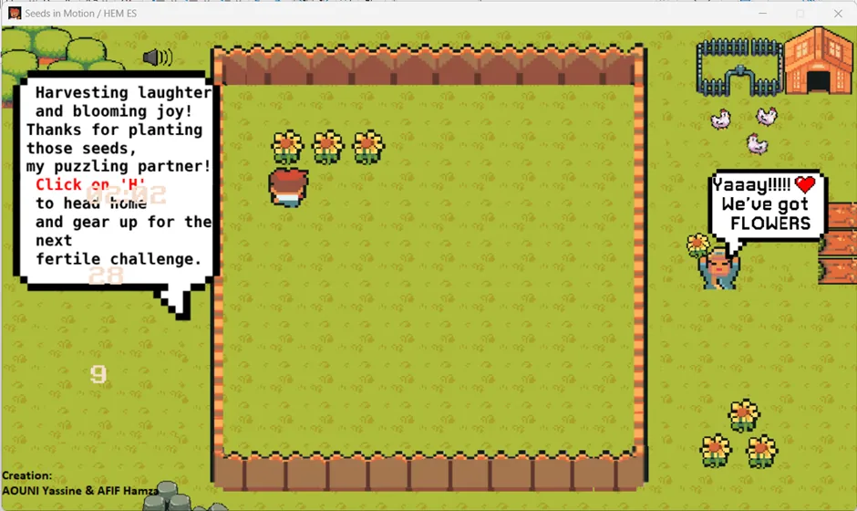

Seeds in Motion - Sokoban Game
A modernized Sokoban game with multiplayer support, created using Python, Pygame, and networking.
Explore FeaturesProject Overview
"Seeds in Motion" is a reimagining of the classic Sokoban game, designed to challenge players with a grid-based puzzle gameplay. This project uses Python and Pygame to create a visually engaging and interactive experience, featuring:
- A grid-based puzzle gameplay with increasing difficulty levels.
- Real-time multiplayer functionality enabled by a custom-built server.
- Executable creation for Windows and Linux systems.
- Animations, sound effects, and seamless gameplay powered by Pygame.
This project not only highlights advanced game development techniques but also showcases the use of networking for multiplayer functionality.
Gallery
Explore the features and gameplay of "Seeds in Motion" through the following images:

Main menu of "Seeds in Motion".

Level selection interface.

In-game gameplay showing the player and movable boxes.

Victory screen after solving the puzzle.
 View on GitHub
View on GitHub